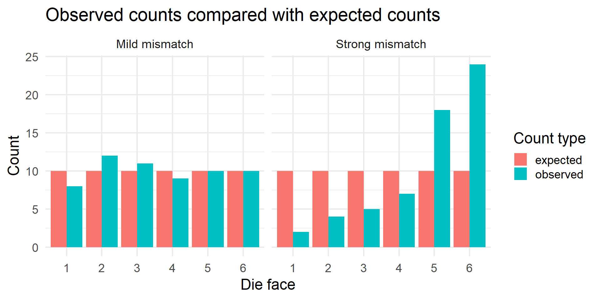
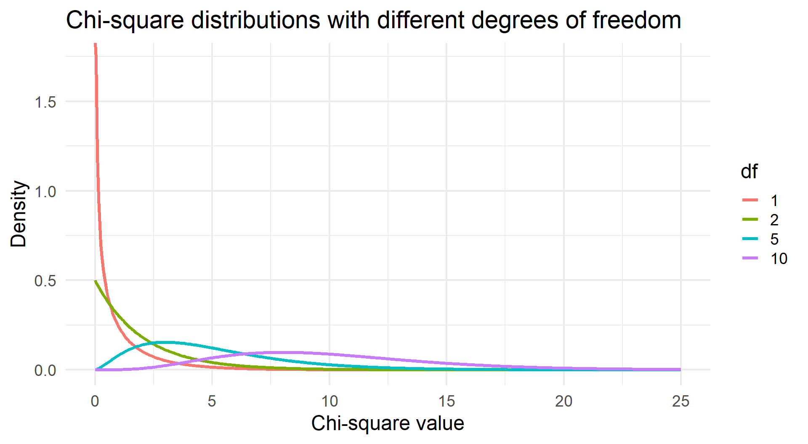
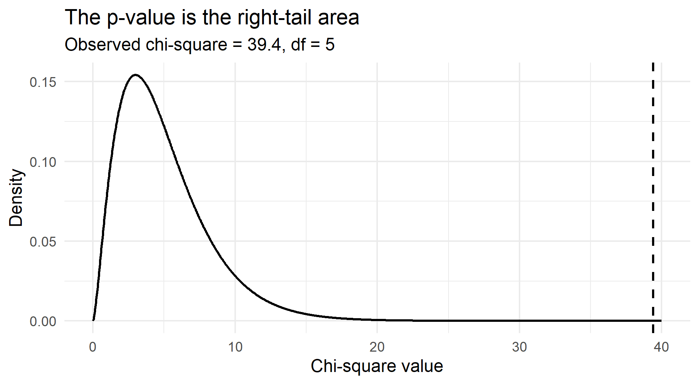
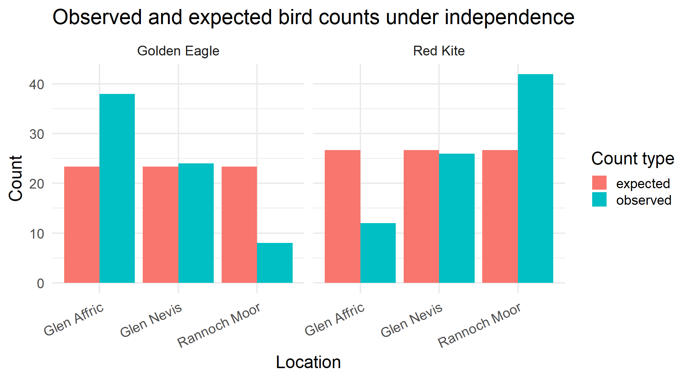

[1] 10Counts, expected values, chi-square distributions, goodness-of-fit, independence, and assumptions
Many statistical tests are built for measurements.
Examples: height, yield, temperature, rainfall, body mass, exam score.
For these, means and differences between means make sense.
But many datasets are counts in categories.
Examples: pass/fail, healthy/diseased, species, location by species, treatment response.
For categorical counts, the average category is usually not meaningful.
The mean of healthy, infected, and dead is not a biological quantity.
Instead, we ask:
Are the counts we observed close to the counts we expected?
That is the central idea behind the chi-square test.
The chi-square test is a test of discrepancy.
It compares:
Observed counts
against:
Expected counts under a null hypothesis
The test asks:
If the null hypothesis were true, would this mismatch be ordinary or surprising?
The chi-square test follows a familiar pattern.
The data type is different from a t-test, but the logic is the same.
Suppose we roll a six-sided die 60 times.
If the die is fair, each face has probability 1/6.
So the expected count for each face is:
So, under fairness, each face is expected about 10 times.
| Face | Observed | Expected if fair |
|---|---|---|
| 1 | 8 | 10 |
| 2 | 12 | 10 |
| 3 | 11 | 10 |
| 4 | 9 | 10 |
| 5 | 10 | 10 |
| 6 | 10 | 10 |
The observed counts are not exactly equal to expected counts.
That is normal. Random data rarely match expectation perfectly.
| Face | Observed | Expected if fair |
|---|---|---|
| 1 | 2 | 10 |
| 2 | 4 | 10 |
| 3 | 5 | 10 |
| 4 | 7 | 10 |
| 5 | 18 | 10 |
| 6 | 24 | 10 |
This looks more suspicious.
Faces 5 and 6 occur far more often than expected.
Faces 1, 2, and 3 occur far less often than expected.
Pearson’s chi-square statistic is:
χ² = sum of (Observed − Expected)² / Expected
or more compactly:
χ² = Σ (O − E)² / E
where:
O − E is the raw difference between what we saw and what the null hypothesis predicted.
If we expected 10 but observed 12, the difference is +2.
If we expected 10 but observed 8, the difference is −2.
Both are mismatches of size 2, but in opposite directions.
The formula uses (O − E)².
Squaring does two things.
For example:
A difference of 8 contributes much more than a difference of 2.
The formula divides by E.
The same raw difference can mean different things at different scales.
A difference of 5 is huge when the expected count is 2.
A difference of 5 is tiny when the expected count is 500.
So chi-square measures mismatch relative to expectation.
If expected = 2 and observed = 7:
(7 − 2)² / 2 = 12.5
If expected = 500 and observed = 505:
(505 − 500)² / 500 = 0.05
Both have a raw difference of 5.
Only the first is strongly surprising relative to expectation.
| face | observed | expected | difference | contribution |
|---|---|---|---|---|
| 1 | 8 | 10 | -2 | 0.4 |
| 2 | 12 | 10 | 2 | 0.4 |
| 3 | 11 | 10 | 1 | 0.1 |
| 4 | 9 | 10 | -1 | 0.1 |
| 5 | 10 | 10 | 0 | 0.0 |
| 6 | 10 | 10 | 0 | 0.0 |
This is small because observed counts are close to expected counts.
| face | observed | expected | difference | contribution |
|---|---|---|---|---|
| 1 | 2 | 10 | -8 | 6.4 |
| 2 | 4 | 10 | -6 | 3.6 |
| 3 | 5 | 10 | -5 | 2.5 |
| 4 | 7 | 10 | -3 | 0.9 |
| 5 | 18 | 10 | 8 | 6.4 |
| 6 | 24 | 10 | 14 | 19.6 |
This is much larger because the observed counts are far from expected counts.
bind_rows(
die |> mutate(example = "Mild mismatch"),
suspicious_die |> mutate(example = "Strong mismatch")
) |>
pivot_longer(c(observed, expected), names_to = "type", values_to = "count") |>
ggplot(aes(x = face, y = count, fill = type)) +
geom_col(position = "dodge") +
facet_wrap(~ example) +
labs(
title = "Observed counts compared with expected counts",
x = "Die face",
y = "Count",
fill = "Count type"
) +
theme_minimal(base_size = 18)
A chi-square statistic is always zero or positive.
It cannot be negative because it is built from squared differences.
The smallest possible value is 0.
That happens when every observed count exactly equals its expected count.
But a statistic alone is not enough.
We need to know whether the statistic is large relative to chance.
The chi-square distribution is the reference distribution for chi-square tests.
It answers:
If the null hypothesis were true, what chi-square values would we expect from random sampling variation?
There is not just one chi-square curve.
There is a family of curves controlled by degrees of freedom.
Degrees of freedom describe how many values are free to vary after constraints have been imposed.
For a goodness-of-fit test with k categories:
df = k − 1
For a two-way table with r rows and c columns:
df = (r − 1)(c − 1)
x <- seq(0, 25, length.out = 500)
chisq_curves <- expand.grid(
x = x,
df = c(1, 2, 5, 10)
) |>
as_tibble() |>
mutate(density = dchisq(x, df = df))
ggplot(chisq_curves, aes(x = x, y = density, colour = factor(df))) +
geom_line(linewidth = 1.3) +
labs(
title = "Chi-square distributions with different degrees of freedom",
x = "Chi-square value",
y = "Density",
colour = "df"
) +
theme_minimal(base_size = 18)
As degrees of freedom increase, the distribution shifts to the right and becomes more spread out.
That makes sense.
With more categories or more table cells, there are more opportunities for random discrepancies to accumulate.
So a chi-square value that is large for 1 df may not be large for 10 df.
Once we have a chi-square statistic and degrees of freedom, we calculate a p-value.
The p-value asks:
If the null hypothesis were true, how often would we see a chi-square statistic at least as large as the one we observed?
A small p-value means the mismatch is unusual under the null hypothesis.
observed_chi <- chi_suspicious
df_die <- 5
x <- seq(0, 40, length.out = 1000)
plot_data <- tibble(
x = x,
density = dchisq(x, df = df_die),
tail = x >= observed_chi
)
ggplot(plot_data, aes(x = x, y = density)) +
geom_area(data = filter(plot_data, tail), fill = "grey70") +
geom_line(linewidth = 1.2) +
geom_vline(xintercept = observed_chi, linetype = "dashed", linewidth = 1.2) +
labs(
title = "The p-value is the right-tail area",
subtitle = paste0("Observed chi-square = ", round(observed_chi, 2), ", df = ", df_die),
x = "Chi-square value",
y = "Density"
) +
theme_minimal(base_size = 18)
The p-value is not the probability that the null hypothesis is true.
It is the probability of a statistic this extreme, or more extreme, assuming the null hypothesis is true.
The p-value is about the data under a model.
It is not the probability that the model is true.
The chi-square goodness-of-fit test is used when we have:
It asks:
Do the observed category counts fit the expected distribution?
Null hypothesis:
The observed counts follow the expected distribution.
Alternative hypothesis:
The observed counts do not follow the expected distribution.
For a fair die:
Each face has probability 1/6.
The alternative says at least one face has a probability different from 1/6.
For category i:
Expected count = total sample size × expected probability
For a fair die with 60 rolls:
Expected count = 60 × 1/6 = 10
This is why each face has expected count 10.
Chi-squared test for given probabilities
data: suspicious_die$observed
X-squared = 39.4, df = 5, p-value = 1.973e-07This compares observed counts with the counts expected under a fair die.
A low p-value suggests the observed data are not consistent with the fair-die model.
A significant goodness-of-fit test tells us:
The observed distribution differs from the expected distribution.
It does not prove why.
Possible explanations include:
Statistics detects the mismatch. Science explains the mismatch.
The chi-square test of independence is used when we have:
It asks:
Are the two categorical variables associated, or are they independent?
| Golden Eagle | Red Kite | |
|---|---|---|
| Glen Affric | 38 | 12 |
| Glen Nevis | 24 | 26 |
| Rannoch Moor | 8 | 42 |
Question:
Are bird species and location independent?
Null hypothesis:
The two categorical variables are independent.
Alternative hypothesis:
The two categorical variables are associated.
For the bird example:
Species and location are independent.
Independence means that knowing one variable does not change the distribution of the other.
For the bird example:
The proportion of Golden Eagles and Red Kites should be roughly the same in each location.
If species proportions differ strongly by location, that suggests association.
For a cell in a two-way table:
Expected count = row total × column total / grand total
This gives the count expected if the row variable and column variable were independent.
Expected counts preserve the row totals and column totals.
| Golden Eagle | Red Kite | |
|---|---|---|
| Glen Affric | 23.33 | 26.67 |
| Glen Nevis | 23.33 | 26.67 |
| Rannoch Moor | 23.33 | 26.67 |
These are the counts predicted by the independence model.
The chi-square statistic measures how far the observed table is from the expected table.
The p-value tells us how unusual that mismatch would be if species and location were independent.
| Golden Eagle | Red Kite | |
|---|---|---|
| Glen Affric | 9.22 | 8.07 |
| Glen Nevis | 0.02 | 0.02 |
| Rannoch Moor | 10.08 | 8.82 |
The overall statistic is the sum of these cell contributions.
Large contributions show where the association is coming from.
birds_long <- as.data.frame(as.table(birds)) |>
rename(location = Var1, species = Var2, observed = Freq)
expected_long <- as.data.frame(as.table(bird_test$expected)) |>
rename(location = Var1, species = Var2, expected = Freq)
left_join(birds_long, expected_long, by = c("location", "species")) |>
pivot_longer(c(observed, expected), names_to = "type", values_to = "count") |>
ggplot(aes(x = location, y = count, fill = type)) +
geom_col(position = "dodge") +
facet_wrap(~ species) +
labs(
title = "Observed and expected bird counts under independence",
x = "Location",
y = "Count",
fill = "Count type"
) +
theme_minimal(base_size = 18) +
theme(axis.text.x = element_text(angle = 25, hjust = 1))
| Feature | Goodness-of-fit | Independence |
|---|---|---|
| Variables | One categorical variable | Two categorical variables |
| Data structure | Vector of counts | Contingency table |
| Question | Do counts match a proposed distribution? | Are variables associated? |
| Null | Distribution equals expected distribution | Variables are independent |
| Expected counts | From specified probabilities | From row and column totals |
| Degrees of freedom | k − 1 | (r − 1)(c − 1) |
The chi-square distribution can feel abstract.
Simulation makes it concrete.
Imagine the null hypothesis is true.
Then:
That is the p-value in action.
Chi-square tests are simple and useful.
But they rely on assumptions.
If the assumptions are badly violated, the p-value may be misleading.
The main assumptions are about:
Chi-square tests are for counts in categories.
They are not for raw percentages, proportions, means, or continuous measurements.
This is suitable:
| Outcome | Count |
|---|---|
| Healthy | 42 |
| Diseased | 18 |
A percentage alone loses sample size.
70% of 10 and 70% of 10,000 carry very different evidence.
Each observation should belong to one category or one cell.
If categories are healthy, infected, and dead, one plant should not be counted in more than one category at the same time.
If observations can belong to multiple categories, the counts are not simple independent category counts.
One observation should not determine or strongly influence another observation.
Possible violations:
If observations are clustered, paired, repeated, or spatially correlated, consider methods that represent the design.
Examples:
The right method depends on how the data were generated.
The chi-square test uses an approximation.
The approximation works better when expected counts are not too small.
A common classroom rule is:
Expected counts should generally be at least 5.
The important values are the expected counts, not just observed counts.
| Golden Eagle | Red Kite | |
|---|---|---|
| Glen Affric | 23.33 | 26.67 |
| Glen Nevis | 23.33 | 26.67 |
| Rannoch Moor | 23.33 | 26.67 |
If expected counts are too small, options include:
If we repeatedly regroup categories until we find a significant result, the p-value becomes misleading.
Good practice:
The chi-square test can detect a pattern.
It cannot repair a weak study design.
If locations were sampled in different seasons, by different observers, or with different methods, a significant location effect might partly reflect those design differences.
The test detects mismatch.
The study design determines whether the mismatch is interpretable.
A chi-square test does not automatically tell you practical importance.
With very large samples, tiny deviations can be statistically significant.
With small samples, large-looking deviations may not be statistically significant.
Always inspect observed counts, expected counts, percentages, cell contributions, and scientific context.
For a contingency table, Cramer’s V is one measure of association strength:
V = sqrt(χ² / [n × min(r − 1, c − 1)])
where:
[1] 0.4913538Cramer’s V is 0 when there is no association.
Larger values indicate stronger association, but interpretation depends on context.
A concise report should include the test, χ² value, degrees of freedom, p-value, and interpretation.
Example:
A chi-square goodness-of-fit test suggested that the observed die rolls were not consistent with a fair die, χ²(df = 5) = 39.4, p = 1.97^{-7}. Faces 5 and 6 occurred more often than expected under the fair-die model.
Example:
A chi-square test of independence suggested an association between bird species and location, χ²(df = 2) = 36.21, p = 1.37^{-8}. Inspection of observed and expected counts showed that Golden Eagles were observed more often than expected in Glen Affric and less often than expected in Rannoch Moor, while Red Kites showed the opposite pattern.
The chi-square test is used for categorical count data.
Its core idea is:
Compare observed counts with expected counts.
The statistic is:
χ² = Σ (O − E)² / E
Large values mean large discrepancy.
The chi-square distribution tells us whether that discrepancy is unusual under the null hypothesis.
Two common introductory chi-square tests are:
Goodness-of-fit
One categorical variable; asks whether observed counts match a proposed distribution.
Independence
Two categorical variables; asks whether the variables are associated.
In both cases, the test is only as meaningful as the null hypothesis, expected counts, assumptions, and study design.